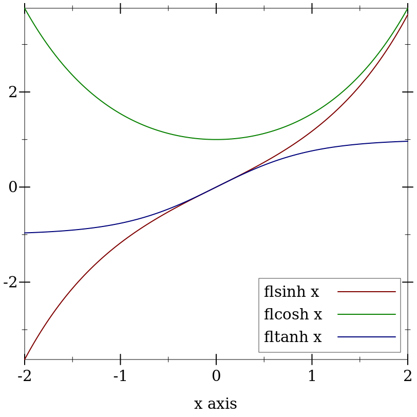

2 Flonums
| (require math/flonum) | package: math-lib |
为了方便起见, math/flonum 重新输出了 racket/flonum , 同时也提供了下面的函数文档。
2.1 额外的 Flonum 函数
> (exact->inexact #i0.5) 0.5
> (flabs (exact->inexact #i0.5)) 0.5
procedure
(flrational? x) → Boolean
x : Flonum
procedure
(flinfinite? x) → Boolean
x : Flonum
procedure
x : Flonum
procedure
(flinteger? x) → Boolean
x : Flonum
最坏情况下的时间复杂度是 O(n2), 尽管观察四次方时间所需的病态输入是指数级的不可能,而且很难有目的地产生。 预期的时间复杂度是 O(n log(n)) 。
参见 flvector-sums ,其变体是计算 xs 中所有的部分和。
> (plot (list (function (compose flsinh fl) #:label "flsinh x") (function (compose flcosh fl) #:label "flcosh x" #:color 2) (function (compose fltanh fl) #:label "fltanh x" #:color 3)) #:x-min -2 #:x-max 2 #:y-label #f #:legend-anchor 'bottom-right) 
最大的观察误差是 2 ulps, 使这些函数(目前)比它们的 racket/math 对应物要精确得多。 它们还在最大可能的域上返回合理的值。
这些函数和它们相应的逆函数一样稳健和准确。
procedure
(flfactorial n) → Flonum
n : Flonum
procedure
(flbinomial n k) → Flonum
n : Flonum k : Flonum
procedure
(flpermutations n k) → Flonum
n : Flonum k : Flonum
procedure
(flmultinomial n ks) → Flonum
n : Flonum ks : (Listof Flonum)
对于返回非整数的合理值的类阶乘函数,见 gamma 和 beta 。
procedure
(fllog-factorial n) → Flonum
n : Flonum
procedure
(fllog-binomial n k) → Flonum
n : Flonum k : Flonum
procedure
(fllog-permutations n k) → Flonum
n : Flonum k : Flonum
procedure
(fllog-multinomial n ks) → Flonum
n : Flonum ks : (Listof Flonum)
对于返回非整数的合理值的类似对数因子的函数,见 log-gamma 和 log-beta 。
> (fllog (+ 1.0 1e-14)) 9.992007221626358e-15
> (fllog1p 1e-14) 9.99999999999995e-15
> (- (flexp 1e-14) 1.0) 9.992007221626409e-15
> (flexpm1 1e-14) 1.0000000000000049e-14
> (plot (list (function (λ (x) x) #:color 0 #:style 'long-dash) (function (compose fllog1p fl) #:label "fllog1p x") (function (compose flexpm1 fl) #:label "flexpm1 x" #:color 2)) #:x-min -4 #:x-max 4 #:y-min -4 #:y-max 4)
许多以 fllog 和 flexp 定义的 flonum 函数, 当它们的定义表达式被放在 fllog1p 和 flexpm1 中时,会变得更加精确。 本模块和 math/special-functions 导出的函数广泛地使用了它们。
> (- 1.0 1e-20) 1.0
procedure
(flexp2 x) → Nonnegative-Flonum
x : Flonum
最大的观察误差是 2.1 ulps, 但通常小于0.7(即接近四舍五入误差)。
Case
Condition
Value
(fllogb b 1.0)
0.0
(fllogb 1.0 x)
+nan.0
(fllogb b x)
+nan.0
Double limits
(fllogb 0.0 0.0)
+inf.0
(fllogb 0.0 +inf.0)
-inf.0
(fllogb +inf.0 0.0)
-inf.0
(fllogb +inf.0 +inf.0)
+inf.0
Limits with respect to b
(fllogb 0.0 x)
x < 1.0
0.0
(fllogb 0.0 x)
x > 1.0
-0.0
(fllogb +inf.0 x)
x > 1.0
0.0
(fllogb +inf.0 x)
x < 1.0
-0.0
Limits with respect to x
(fllogb b 0.0)
b < 1.0
+inf.0
(fllogb b 0.0)
b > 1.0
-inf.0
(fllogb b +inf.0)
b > 1.0
+inf.0
(fllogb b +inf.0)
b < 1.0
-inf.0
例如,考虑 (fllogb 0.0 0.0) 。 取一个相互关联的极限,如果外部极限是关于 x 的,我们得到 ∞,如果外部极限是关于 b 的,得到 0。 这通常意味着 (fllogb 0.0 0.0) = +nan.0 。
> (define (f x) (+ 1.0 (* (+ x 3.0) (sqr (- x 1.0))))) > (define x0 (flbracketed-root f -4.0 2.0))
> (plot (list (x-axis) (function f -4 2) (function-label f x0)) #:y-min -10) > (f (flprev x0)) -7.105427357601002e-15
> (f x0) 6.661338147750939e-16
> (flbracketed-root f -1.0 2.0) +nan.0
我们不能保证 flbracketed-root 能找到任何 特定的 根。 此外,未来对其实现的更新可能会使它找到不同的根。
目前还不能保证它能找到 最接近 精确根的 x 。
目前它最多可以运行 5000 次迭代。
procedure
(make-flexpt x) → (Flonum -> Flonum)
x : Real
> (bf-precision 128) > (define y 150.0) > (define pi^y (bigfloat->rational (bfexpt pi.bf (bf y)))) > (flulp-error (flexpt pi y) pi^y) 43.12619934359266
> (define flexppi (make-flexpt (bigfloat->rational pi.bf))) > (flulp-error (flexppi y) pi^y) 0.8738006564073412
procedure
(flsqrt1pm1 x) → Flonum
x : Flonum
2.2 对数空间算术
特别是在处理概率和概率密度时,用 log space 或其真实值的自然对数来表示非负数通常很有用。 一般来说,原因是 最小 的正数是 太大 。
> (require math/distributions) > (pdf (normal-dist) 50.0) 0.0
> (pdf (normal-dist) 50.0 #t) -1250.9189385332047
在对数空间中,指数化变成了乘法,乘法变成了加法,而加法则变得很棘手。 解决方案见 lg+ 和 lgsum 。
procedure
logx : Flonum logy : Flonum
procedure
logx : Flonum logy : Flonum
procedure
logxs : (Listof Flonum)
当 logy > logx 时, lg- 返回 +nan.0 。 两个函数都正确地将 -inf.0 视为对数空间 0.0 。
要将两个以上的对数空间的数字以相同的保证相加,请使用 lgsum 。
> (lg+ (fllog 0.5) (fllog 0.2)) -0.35667494393873234
> (flexp (lg+ (fllog 0.5) (fllog 0.2))) 0.7
> (lg- (fllog 0.5) (fllog 0.2)) -1.203972804325936
> (flexp (lg- (fllog 0.5) (fllog 0.2))) 0.30000000000000004
> (lg- (fllog 0.2) (fllog 0.5)) +nan.0
虽然比天真的实现更准确, 但这两个函数在输出接近 0.0 (或对数空间 1.0) 的值的区域都容易出现 catastrophic cancellation 。 虽然这些输出有很高的相对误差,但它们的绝对误差却很低,当被指数化时,几乎只有舍入误差。 此外,当 logx 和 logy 本身有误差时,灾难性的取消是不可避免的,而这是迄今为止最常见的情况。
当然,这些都是浮点研究中的借口。 目前还没有合理快速的算法来计算低相对误差的 lg+ 和 lg- 。 目前,如果你需要这样的精度,请使用 math/bigfloat 。
procedure
(flprobability? x [log?]) → Boolean
x : Flonum log? : Any = #f
> (flprobability? -0.1) #f
> (flprobability? 0.5) #t
> (flprobability? +nan.0 #t) #f
2.3 调试 Flonum 函数
以下函数和常数在编写和调试必须在最大可能的域上准确的 flonum 函数时非常有用。
> (plot (list (function exp-taylor-1 #:label "exp-taylor-1 x") (function exp #:color 2 #:label "exp x")) #:x-min (flstep 1.00002 -40) #:x-max (flstep 1.00002 40) #:width 480)
> (plot (function (λ (x) (flulp-error (exp-taylor-1 x) (exp x)))) #:x-min 0.99998 #:x-max 1.00002 #:y-label "Error (ulps)")

为了得到一个真实的函数,比如 exp 来进行测试, 尽可能准确地使用精确的有理数或高精度的 bigfloats 来计算输出。
2.3.1 测量浮点误差
procedure
(flulp-error x r) → Flonum
x : Flonum r : Real
对于非有理参数,如 +nan.0, flulp-error 返回 0.0 , 如果 (eqv? x r); 否则返回 +inf.0 。
一个最大误差为 0.5 ulps 的 flonum 函数只表现出舍入误差;它是 correct 。 一个最大误差不超过几个 ulps 的 flonum 函数是 accurate 。 大多数中等复杂的 flonum 函数,在直接实现时,似乎有超过十万个 ulps 的最大误差。
> (flulp-error 0.5 1/2) 0.0
> (flulp-error 0.14285714285714285 1/7) 0.2857142857142857
> (flulp-error +inf.0 +inf.0) 0.0
> (flulp-error +inf.0 +nan.0) +inf.0
> (flulp-error 1e-20 0.0) +inf.0
> (flulp-error (- 1.0 (fl 4999999/5000000)) 1/5000000) 217271.6580864
当近似值不一定由 flonum 来表示时,请看 relative-error 来测量近似值的类似方法。
2.3.2 Flonum 常量
(define (newton-sqrt x) (let loop ([y (* 0.5 x)]) (define dy (/ (- x (sqr y)) (* 2.0 y))) (if ((abs dy) . <= . (abs (* 0.5 epsilon.0 y))) (+ y dy) (loop (+ y dy)))))
近似误差通常用 epsilons 的相对误差来理解。 epsilons 数的相对误差与 ulps 的误差大致对应,除非近似是次正态的。
2.3.3 低级的 Flonum 操作
procedure
(flonum->bit-field x) → Natural
x : Flonum
> (number->string (flonum->bit-field -inf.0) 16) "fff0000000000000"
> (number->string (flonum->bit-field +inf.0) 16) "7ff0000000000000"
> (number->string (flonum->bit-field -0.0) 16) "8000000000000000"
> (number->string (flonum->bit-field 0.0) 16) "0"
> (number->string (flonum->bit-field -1.0) 16) "bff0000000000000"
> (number->string (flonum->bit-field 1.0) 16) "3ff0000000000000"
> (number->string (flonum->bit-field +nan.0) 16) "7ff8000000000000"
procedure
(bit-field->flonum i) → Flonum
i : Integer
procedure
(flonum->ordinal x) → Integer
x : Flonum
> (flonum->ordinal -inf.0) -9218868437227405312
> (flonum->ordinal +inf.0) 9218868437227405312
> (flonum->ordinal -0.0) 0
> (flonum->ordinal 0.0) 0
> (flonum->ordinal -1.0) -4607182418800017408
> (flonum->ordinal 1.0) 4607182418800017408
> (flonum->ordinal +nan.0) 9221120237041090560
procedure
(ordinal->flonum i) → Flonum
i : Integer
procedure
(flonums-between x y) → Integer
x : Flonum y : Flonum
> (flonums-between 0.0 1.0) 4607182418800017408
> (flonums-between 1.0 2.0) 4503599627370496
> (flonums-between 2.0 3.0) 2251799813685248
> (flonums-between 1.0 +inf.0) 4611686018427387904
procedure
(flsubnormal? x) → Boolean
x : Flonum
尽管对次正态数的 flonum 操作仍然经常由软件异常处理来实现,但情况正在改善。 健全的 flonum 函数应该正确地处理亚正态输入,并尽可能地减少输出中的误差,使之接近零 ulps 。
value
value
> +max-subnormal.0 2.225073858507201e-308
2.4 双浮点操作
为了获得额外的精度,浮点计算可以使用两个不重叠的楞次来表示一个数字。 这种数对通常被称为 double-double 数。 这对数字的精确之和就是它所代表的数字。(因为它们是不重叠的,所以浮点数的和等于最大的那个)。
为了提高速度,特别是在算术运算中,没有双倍数的数据类型。 它们总是非盒式的:作为两个参数给出,并作为两个值接收。 在这两种情况下,量级较高的数字在前。
从来没有检查过输入以确保它们是分类的和不重叠的,但是如果输入是分类的和不重叠的,那么输出就保证是分类的和不重叠的。
> (fl 1/7) 0.14285714285714285
> (relative-error (fl 1/7) 1/7) 5.551115123125783e-17
> (define-values (x2 x1) (fl2 1/7)) > (list x2 x1) '(0.14285714285714285 7.93016446160826e-18)
> (fl (relative-error (+ (inexact->exact x2) (inexact->exact x1)) 1/7)) 3.0814879110195774e-33
如果 x 不是有理数, fl2 返回 (values x 0.0) 。
> (define-values (x2 x1) (fl2 1/7)) > (fl2->real x2 x1) 46359793379775246683308002939465/324518553658426726783156020576256
> (define-values (x2 x1) (fl2 1/7)) > (fl2? x2 x1) #t
> (fl2? 0.14285714285714285 0.07692307692307693) #f
> (fl2? +inf.0 0.0001) #f
这个函数相当慢,所以它只用于测试。
procedure
x : Flonum y : Flonum
procedure
x : Flonum y : Flonum
procedure
x : Flonum y : Flonum
procedure
x : Flonum y : Flonum
procedure
(flsqr/error x) → (Values Flonum Flonum)
x : Flonum
procedure
(flsqrt/error x) → (Values Flonum Flonum)
x : Flonum
procedure
(flexp/error x) → (Values Flonum Flonum)
x : Flonum
procedure
(flexpm1/error x) → (Values Flonum Flonum)
x : Flonum
使用这些函数可以直接从浮点运算的结果中生成双倍数。
> (define x1 (fl 1/7)) > (define x2 (fl 1/13)) > (define z* (bigfloat->real (bfexp (bf* (bf x1) (bf x2))))) mpfr_set_nan: implementation not found
arguments...:
#<_mpfr>
> (relative-error (flexp (fl* x1 x2)) z*) z*: undefined;
cannot reference an identifier before its definition
in module: top-level
> (let*-values ([(y2 y1) (fl*/error x1 x2)] [(z2 z1) (fl2exp y2 y1)]) (fl (relative-error (fl2->real z2 z1) z*))) z*: undefined;
cannot reference an identifier before its definition
in module: top-level
对于 flexp/error 和 flexpm1/error, 最大的观察误差是 3 ulps。 (见 fl2ulp)。 对于其他的,最大的观察误差是 0.5 ulps 。
procedure
x2 : Flonum x1 : Flonum
procedure
(fl2rational? x2 x1) → Boolean
x2 : Flonum x1 : Flonum
procedure
(fl2positive? x2 x1) → Boolean
x2 : Flonum x1 : Flonum
procedure
(fl2negative? x2 x1) → Boolean
x2 : Flonum x1 : Flonum
procedure
(fl2infinite? x2 x1) → Boolean
x2 : Flonum x1 : Flonum
procedure
x2 : Flonum x1 : Flonum
procedure
x2 : Flonum x1 : Flonum y2 : Flonum y1 : Flonum = 0.0
procedure
x2 : Flonum x1 : Flonum y2 : Flonum y1 : Flonum = 0.0
procedure
x2 : Flonum x1 : Flonum y2 : Flonum y1 : Flonum = 0.0
procedure
x2 : Flonum x1 : Flonum y2 : Flonum y1 : Flonum = 0.0
procedure
x2 : Flonum x1 : Flonum = 0.0
procedure
x2 : Flonum x1 : Flonum = 0.0
procedure
x2 : Flonum x1 : Flonum = 0.0
对于算术,误差小于 8 ulps. (参见 fl2ulp) 。 对于 fl2sqr 和 fl2sqrt, 误差小于 1 个 ulp, 并且 fl2abs 是精确的。
procedure
x2 : Flonum x1 : Flonum y2 : Flonum y1 : Flonum
procedure
x2 : Flonum x1 : Flonum y2 : Flonum y1 : Flonum
procedure
x2 : Flonum x1 : Flonum y2 : Flonum y1 : Flonum
procedure
x2 : Flonum x1 : Flonum y2 : Flonum y1 : Flonum
procedure
x2 : Flonum x1 : Flonum y2 : Flonum y1 : Flonum
procedure
x2 : Flonum x1 : Flonum
procedure
x2 : Flonum x1 : Flonum
procedure
x2 : Flonum x1 : Flonum
procedure
x2 : Flonum x1 : Flonum
对于 fl2exp 和 fl2expm1, 误差小于 3 ulps 。 (见 fl2ulp)。 对于 fl2log 和 fl2log1p, 误差小于 2 ulps 。
2.4.1 调试双浮点函数
procedure
x2 : Flonum x1 : Flonum
procedure
(fl2ulp-error x2 x1 r) → Flonum
x2 : Flonum x1 : Flonum r : Real
双倍数最后一位的单位是这对双倍数的高阶单位,右移 52 位。
> (fl2ulp 1.0 0.0) 4.930380657631324e-32
> (let-values ([(x2 x1) (fl2 1/7)]) (fl2ulp-error x2 x1 1/7)) 0.07142857142857142
value
value
> +max-subnormal.0 2.225073858507201e-308
> +max-subnormal.hi 1.0020841800044864e-292
2.4.2 调试双浮点函数
下面的语法形式是 fl+/error 等函数的快速版本。 它们之所以快速,是因为它们对参数的大小和参数之间的关系做了假设,并且没有正确地处理非有理数的双倍数楞次。
syntax
(fast-mono-fl+/error x y)
syntax
(fast-mono-fl-/error x y)
syntax
(fast-fl+/error x y)
syntax
(fast-fl-/error x y)
syntax
(fast-fl*/error x y)
syntax
(fast-fl//error x y)
syntax
(fast-flsqr/error x)
syntax
(flsplit x)
用于实现双-双乘法。
2.5 额外的 Flonum 向量函数
> (build-flvector 10 fl) (flvector 0.0 1.0 2.0 3.0 4.0 5.0 6.0 7.0 8.0 9.0)
syntax
(inline-build-flvector n proc)
n : Integer
proc : (Index -> Flonum)
procedure
(flvector-map proc xs xss ...) → FlVector
proc : (Flonum Flonum ... -> Flonum) xs : FlVector xss : FlVector
proc 要接受的参数数与它下面的 flonum 向量参数数相同。 然而,目前 Typed Racket 的一个限制要求 proc 接受 any 数量的参数。 要将一个单极函数如 fl+ 映射到相应数量的 flonum 向量上, 目前可以使用 inline-flvector-map 。
syntax
(inline-flvector-map proc xs xss ...)
proc : (Flonum Flonum ... -> Flonum)
xs : FlVector
xss : FlVector
procedure
(flvector-copy! dest dest-start src [ src-start src-end]) → Void dest : FlVector dest-start : Integer src : FlVector src-start : Integer = 0 src-end : Integer = (flvector-length src)
procedure
(list->flvector vs) → FlVector
vs : (Listof Real)
procedure
(flvector->list xs) → (Listof Flonum)
xs : FlVector
procedure
(vector->flvector vs) → FlVector
vs : (Vectorof Real)
procedure
(flvector->vector xs) → (Vectorof Flonum)
xs : FlVector
procedure
xs : FlVector ys : FlVector
procedure
xs : FlVector ys : FlVector
procedure
xs : FlVector (flvector- xs ys) → FlVector xs : FlVector ys : FlVector
procedure
xs : FlVector (flvector/ xs ys) → FlVector xs : FlVector ys : FlVector
procedure
(flvector-scale xs y) → FlVector
xs : FlVector y : Flonum
procedure
(flvector-abs xs) → FlVector
xs : FlVector
procedure
(flvector-sqr xs) → FlVector
xs : FlVector
procedure
(flvector-sqrt xs) → FlVector
xs : FlVector
procedure
(flvector-min xs ys) → FlVector
xs : FlVector ys : FlVector
procedure
(flvector-max xs ys) → FlVector
xs : FlVector ys : FlVector
procedure
(flvector-sum xs) → Flonum
xs : FlVector
procedure
(flvector-sums xs) → FlVector
xs : FlVector
> (flvector-sums (flvector 1.0 1e-16 1e-16 1e-16 1e-16 1e+100 -1e+100))
(flvector
1.0
1.0
1.0000000000000002
1.0000000000000002
1.0000000000000004
1e+100
1.0000000000000004)